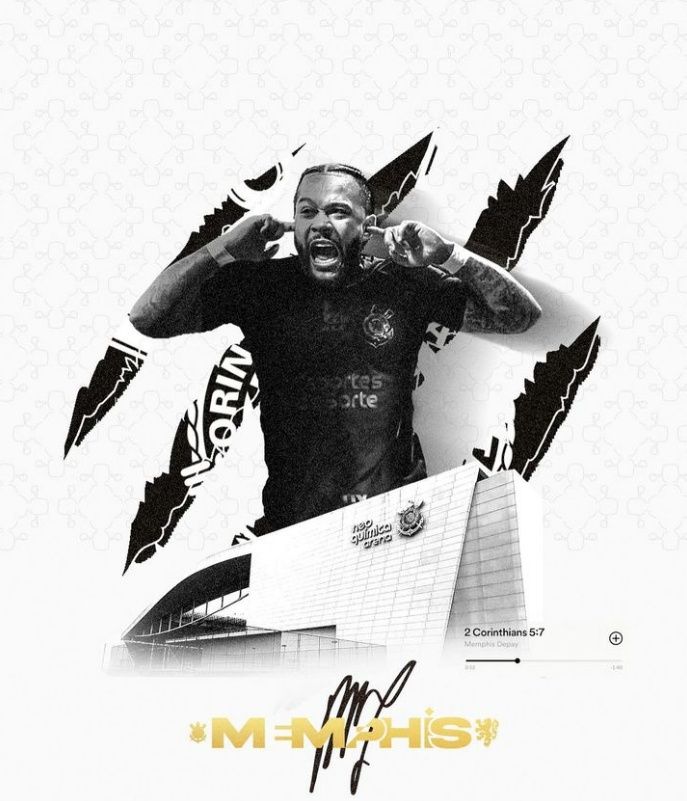
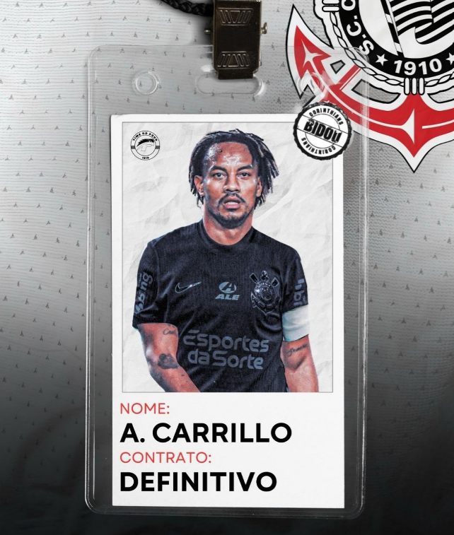

O Corinthians anunciou o jogador Memphis Depay, que chega com um contrato até o fim de 2026, onde o clube terá de desembolsar 70 milhões ao jogador com salários e comissões, o astro Holândes estava sem clube desde sua passagem pelo Atlético de Madrid e hoje é jogador do Timão.

O jogador Andre Carrillo foi contratado em definitivo pelo Corinthians e já está no Bid e disppnivel para o jogo contra o Juventude na quarta, porém com a chegada de Memphis Depay o jogador ainda não teve seu anúncio em definitivo pelo clube e nem a divulgação de valores, o que deve acontecer amanhã.
Segundo Notícias o grande Jogador Sérgio Ramos ex Real Madrid foi oferecido ao corinthians por empresários do próprio jogador, o Corinthians analisa com cautela a contratação, o jogador teria uma pedida salarial mais alta que a de Memphis, porém o jogador agora sem contrato é um "sonho Corinthiano" no momento.
O jogador Kurzawa que no momento está sem clube, fez muito barulho essa semana com a torcida do corinthians, após o anúncio de Memphis o jogador fez postagens em seu instagram com uma música de nome Corinthians e logo após postou uma música do funkeiro corinthiano Hariel, segundo fontes a diretoria do Corinthians está em conversas avançadas com o jogador.